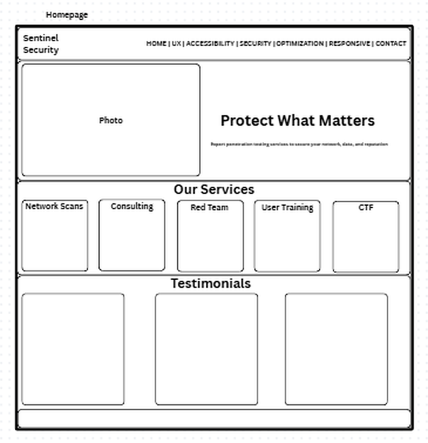
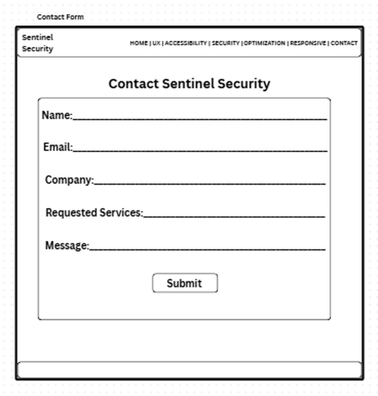
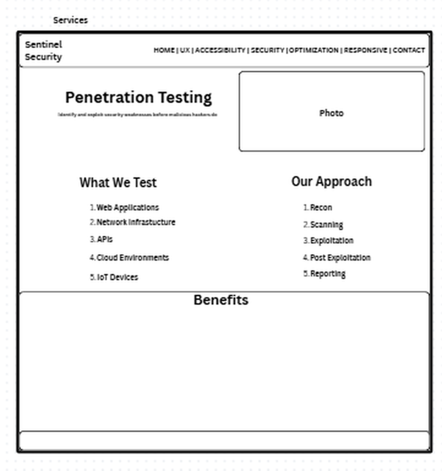
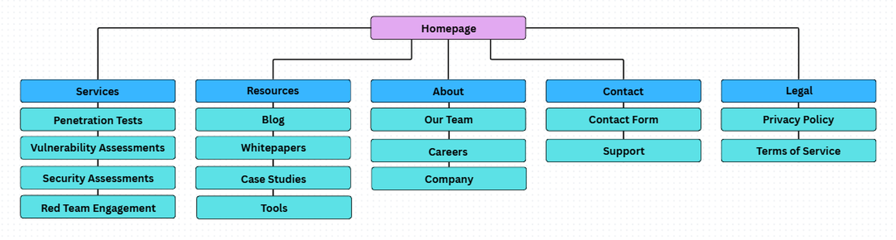
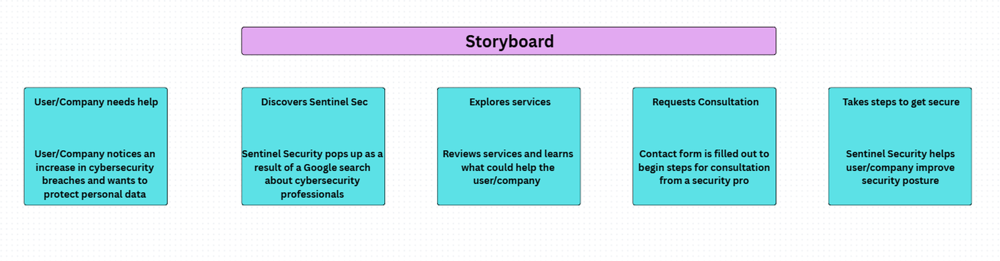

Wireframes
The homepage, contact form, and services page were planned before building anything. These sketches focus on where information belongs and how someone would move through the site.






Site map & storyboard
I mapped the main sections and sketched the path someone could take from finding the company to requesting a consultation.


Design decisions
In Part 1, I wrote about keeping the pages simple and consistent, making the layout work on both computers and phones, and thinking about accessibility early in the process.
- Use clear menus, headings, labels, and a logical layout.
- Plan flexible layouts, responsive images, and CSS media queries.
- Consider keyboard navigation, screen readers, readable contrast, and helpful form errors.
- Plan checks with Lighthouse, WAVE, and axe DevTools; these were proposed methods, not testing results.
Source materials: Project 1 Part 1 and Project 1 Part 2 (included with this portfolio).